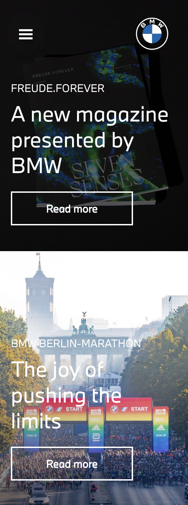
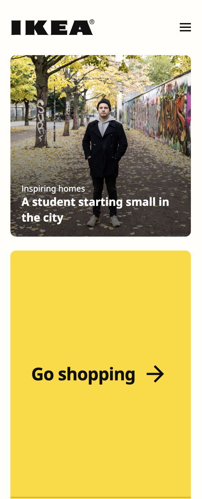

Visual Hierarchy
McDonalds mcdonalds.comVisual Hierarchy is used to rank design elements and influence in the order you want your users to view them. We see here how scale and contrast is used to make the most important elements stand out.
Proximity
BMW bmw.com Proximity is about placement of items and content on a page to establish the relative strength of a relationship between items.
Contrast
Ikea ikea.com Contrast is designing a distinct difference between foreground and background colors in order to enhance readability.